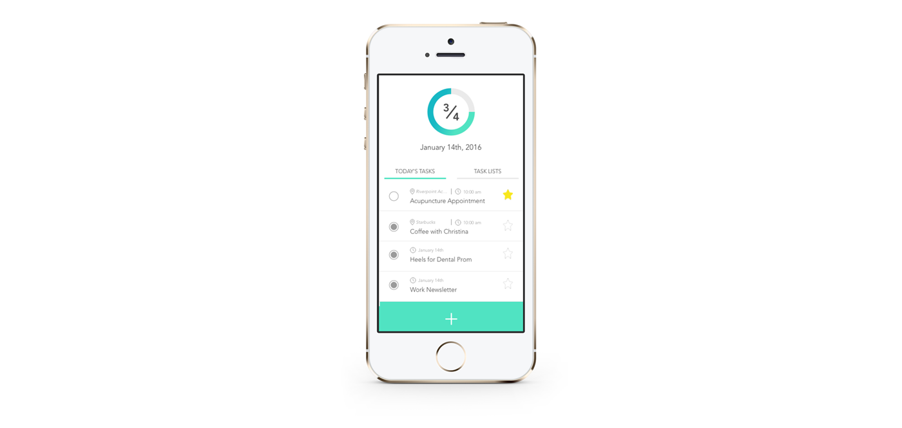

Blocitoff
Mobile, UX, UI

The Solution
With the user stories presented below, I went on to try to make a clean and clear iteration of what a potential task app could look like. My intention was to keep track of their items on their lists in the most comprehensive way.
- As a user, I want to view my active tasks in a list form
- As a user, I want to submit new tasks to the list
- As a user, I want to prioritize certain items on the list
- As a user, I want to mark tasks as complete